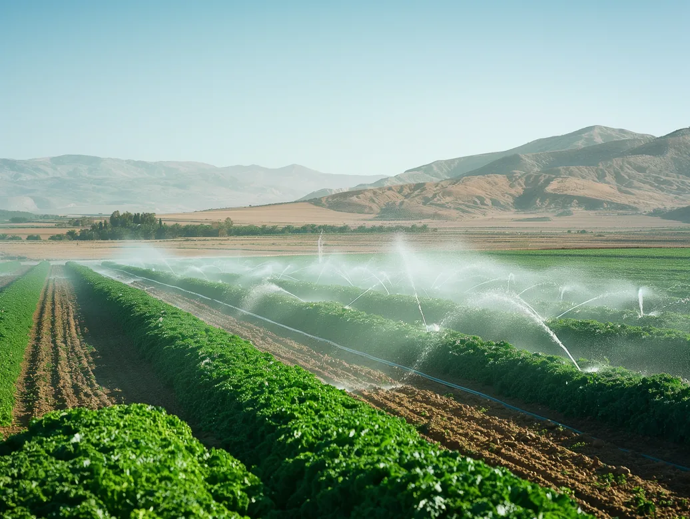
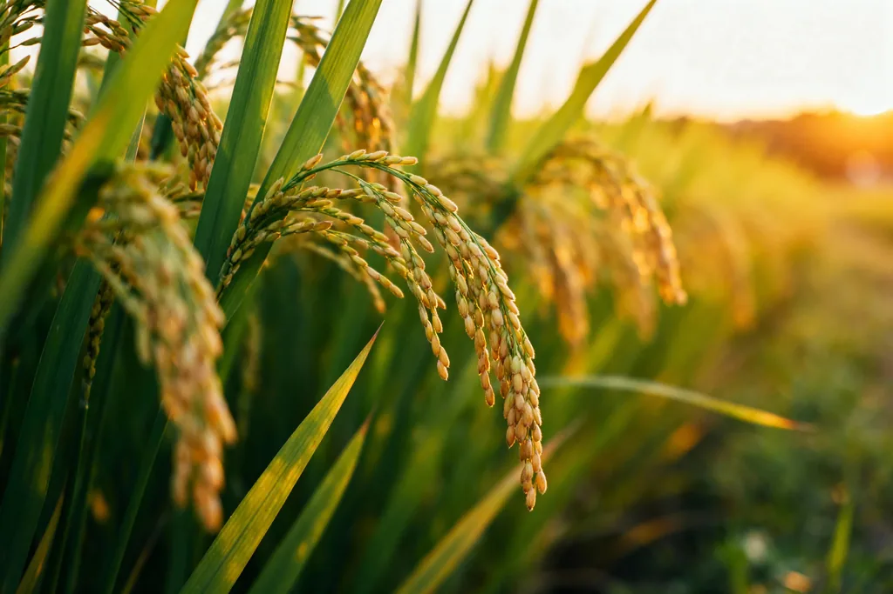
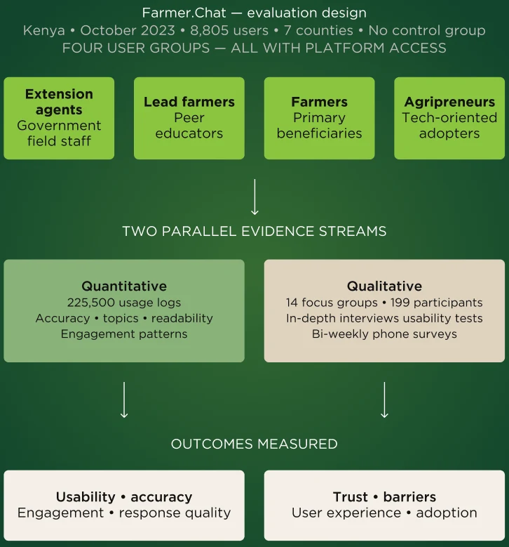
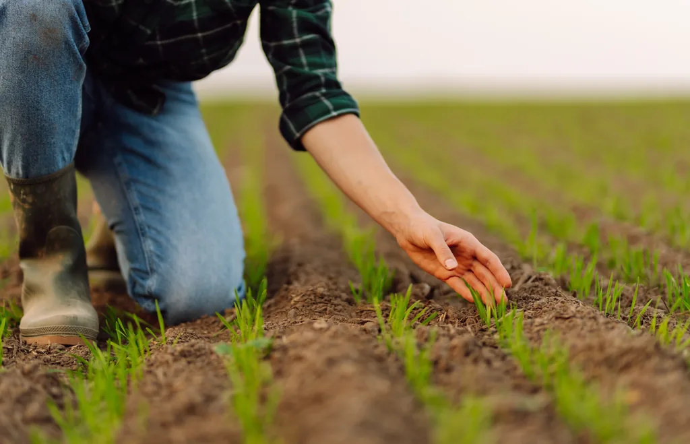
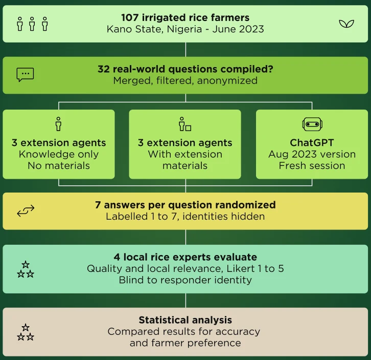
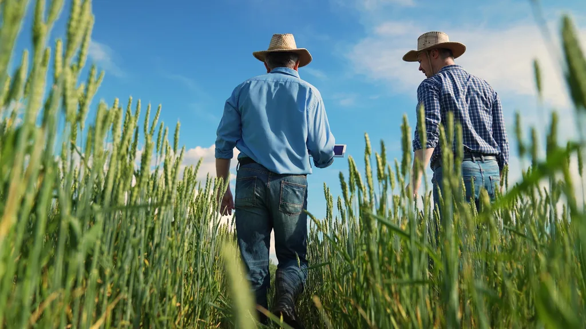
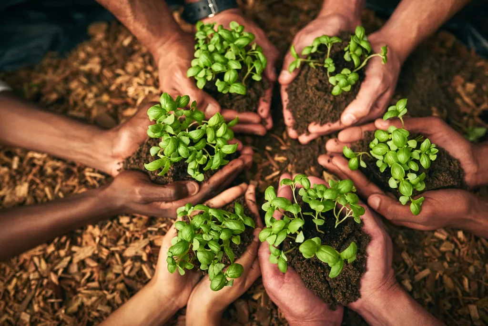
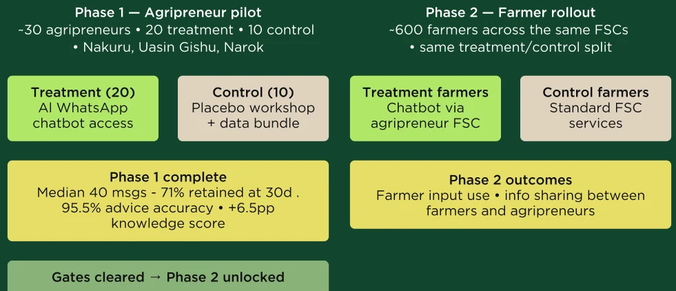

Artificial intelligence is rapidly entering agriculture, promising to solve one of the sector's biggest bottlenecks: getting the right advice to the right farmer at the right time.
For many smallholder farmers, access to timely and reliable agricultural advice remains limited. Traditional extension systems often struggle to deliver personalized recommendations at scale: extension agents are overstretched, advice is often generalized rather than adapted to local conditions, and support rarely arrives exactly when farmers need to make decisions on fertilizer application, pest management, or planting.
Over the past two decades, researchers have tested a range of digital tools to address these gaps.

One early approach relied on simple SMS reminders, delivering timely information directly to farmers' phones. In Kenya, reminders sent to sugarcane farmers about key farming tasks increased yields by 8 percent in the first season and generated an additional USD 45 per plot at a cost of only USD 0.30 per farmer (Casaburi et al., 2019). However, the system remained limited to standardized messages delivered at fixed times, with no ability for farmers to ask questions or receive advice tailored to their own situation.
Researchers then tested more interactive models.
In India, a two-way agricultural hotline allowed cotton farmers to call experts, browse responses to other farmers' questions, and receive weekly agricultural tips. The service reached nearly 90 percent of farmers in intervention villages and increased the use of mobile-based information for agricultural decisions by 66 percentage points (Cole & Fernando, 2020). Yet despite strong engagement, impacts on yields and profits remained limited and varied across seasons, suggesting that improving access to information alone may not always translate into better outcomes.
Other approaches focused on visual learning.
In Bihar, India, farmers attended village video screenings featuring local farmers demonstrating recommended rice cultivation practices. The videos were facilitated through community viewing sessions, allowing farmers to learn from peers facing similar conditions. Compared to conventional extension services, the intervention increased rice yields by 12-18 percent and profits by 9-24 percent (Baul et al., 2024). Still, adoption of the full recommended package remained incomplete and impacts faded over time.
Together, these studies suggest that digital tools can improve how agricultural information is delivered, but important limitations remain. SMS systems are static, hotlines are resource-intensive, and videos cannot respond to farmers' specific questions in real time. This raises an important question: can artificial intelligence overcome these limitations?
Unlike previous digital advisory tools, AI assistants can respond instantly to farmer questions, process voice and text in local languages, and provide more personalized recommendations adapted to a farmer's crop, location, and needs. But can they provide reliable advice? Will farmers trust and use them? And most importantly, can they improve farming decisions and outcomes?
This newsletter examines the emerging evidence on AI-powered agricultural advisory. We first review two recent studies testing AI chatbots in real-world settings, before turning to UJALA's newly funded pilot evaluation in Kenya, led by Ali Aouad, J-PAL invited researcher and Assistant Professor at MIT Sloan School of Management, which explores whether AI-powered advisory can improve farmer decision-making and coordination with agripreneurs.
In Kenya and across Sub-Saharan Africa and South Asia, smallholder farmers face a persistent gap in access to timely agricultural advice. Government extension services are severely understaffed. In Kenya, agent-to-farmer ratios reach 1:4,000, ten times worse than the recommended 1:400. When farmers encounter a sick animal, a crop disease outbreak, or an unfamiliar pest, they typically have no reliable person to call, and waiting days for an extension agent can mean losing an entire harvest.
To address this, researchers at Digital Green and Microsoft Research developed Farmer.Chat, a generative AI chatbot deployed on WhatsApp and Telegram. Drawing on a vetted knowledge base of agricultural documents, government guidelines, crop tables, and farming videos, the system generates personalized responses in real time across six languages, with voice input and output to accommodate low-literacy users (Singh et al., 2024).

The study employed a mixed-methods evaluation combining large-scale analysis of platform usage logs with qualitative user research to assess usability, trust, engagement, and response quality.
The study focused primarily on Kenya, where Farmer.Chat launched in October 2023 across seven counties, serving 8,805 users. While farmers were the primary intended beneficiaries, the platform was also deployed to other actors involved in delivering agricultural advice and services. This allowed researchers to assess not only whether farmers would use and trust the tool, but also whether AI could strengthen the broader agricultural advisory ecosystem.

Farmers used the platform regularly and across a wide range of agricultural topics. In Kenya alone, users submitted more than 225,000 queries, averaging 29 questions per farmer. While a relatively small group of highly engaged users generated most of the traffic, activity remained consistent throughout the pilot. Dairy and poultry were the most common topics, followed by coffee, potato, and avocado production. Usage also reflected seasonal needs, with questions on pests and diseases increasing during the main growing season.
Overall, the platform was able to provide timely and reasonably accurate advice. Around three-quarters of all queries received a response, typically within nine seconds. Of these responses, about 80% were factually correct and two-thirds directly addressed the farmer's question. To improve the user experience, the team introduced suggested follow-up questions in February 2024, helping farmers continue conversations more easily. The feature was quickly adopted and accounted for nearly half of all interactions during peak periods.
The quality of farmer questions improved with experience, although some barriers remained. More active users tended to ask clearer and more detailed questions than occasional users, and both groups became better at interacting with the system over time. While most responses were written in accessible language, some remained too complex for farmers with lower literacy levels.
Trust ultimately emerged as the key factor driving continued use. Farmers often tested recommendations on their own plots before sharing them with others, suggesting a cautious but growing confidence in the platform. Users reported practical benefits such as reducing veterinary costs, improving pest management, and receiving advice much faster than through traditional channels. Women particularly appreciated the ability to access information privately and at any time of day, although they also faced greater obstacles to adoption, including lower smartphone ownership and higher relative data costs.
The study is essentially a deployment and usability paper. It cannot answer whether Farmer.Chat actually improved yields, incomes, or any measurable agricultural outcome. There was no comparison group and no randomization. All evidence of impact comes from self-reported user interviews, which are prone to bias (social desirability bias and recall error). The heavy concentration of queries among a small share of users also raises questions about whether the platform is genuinely reaching the most marginalized farmers, or primarily the already-connected intermediaries like extension agents and lead farmers.
Of the 25.2% of queries the platform failed to answer, 66.3% failed because the knowledge base lacked sufficient information. This means the system's usefulness remains substantially constrained by content coverage. Response quality metrics were validated internally rather than by independent assessors, and translation accuracy for local dialects remains a known weakness that the authors acknowledge but do not fully resolve.
Traditional extension systems struggle to deliver timely, localized, and technically accurate recommendations, especially for complex decisions like fertilizer timing or seed selection. In Kano State, Nigeria, many rice farmers receive little to no extension support. Researchers asked whether an AI chatbot could fill this gap (Ibrahim et al., 2024).

Researchers collected 32 real-world questions from 107 irrigated rice farmers in Kano State. They then compared answers from ChatGPT (August 2023 version) to answers from six agricultural extension agents. The researchers divided the six agents into two groups: three answered using only their own knowledge, and three had access to extension materials. Four local rice experts, blind to the responder's identity, rated each response for quality and local relevance on a 1-5 scale. The evaluators also stated which response they preferred for each question.

ChatGPT consistently outperformed extension agents when providing agronomic advice. On average, the chatbot received a score of 3.8 out of 5, compared to 3.2 for extension agents relying on their own knowledge and 3.3 for agents provided with extension materials. ChatGPT also received the highest possible rating ("very good") in 40 percent of cases, while extension agents achieved this rating in only 6–8 percent of cases. Overall, evaluators preferred the chatbot's response in 78 percent of comparisons, or 69 percent even when agents had access to extension manuals.
One of ChatGPT's main strengths was its ability to provide detailed and comprehensive recommendations. While extension agents often gave very short responses, the chatbot typically explained the reasoning behind its recommendations and provided additional context that could help farmers better understand a problem. This additional detail was reflected in the evaluators' ratings and contributed to the chatbot's superior performance.
However, the study also revealed important weaknesses when advice required local knowledge. Although ChatGPT performed well on general agronomic questions, it sometimes provided incorrect location-specific recommendations. For example, it suggested seed rates of 80–120 kg/ha instead of the locally recommended 35–40 kg/ha, recommended planting during November–December instead of the correct January–February period for the dry season. It also gave inaccurate recommendations regarding the number of seedlings per hill under different seasonal conditions.
Interestingly, the extension agents themselves viewed the technology positively. After reviewing ChatGPT's responses, all six participating agents considered the chatbot's recommendations to be better than their own and indicated that they would be willing to use the tool in the future to support farmers. The findings therefore suggest that AI may have significant potential as a complement to extension services, helping agents deliver more consistent and technically robust advice while still relying on local expertise to adapt recommendations to farmers' specific conditions.

Several limitations suggest caution when interpreting these results. First, the study assessed the technical quality of responses rather than their usefulness to farmers. The evaluators were agricultural experts, not farmers, and may therefore have favored ChatGPT's detailed answers. In practice, farmers might prefer the shorter and more direct recommendations typically provided by extension agents. This difference was substantial, with ChatGPT responses averaging 335 words compared to just 10 words for extension agents.
Second, the study did not measure whether better advice actually translates into better outcomes. No farmers received or implemented the recommendations, meaning the researchers could not assess impacts on farming practices, yields, profits, or trust in the technology. Third, the findings are based on a very small sample: six extension agents, four evaluators, one crop, and one geographic region. It is therefore unclear whether the results would hold across different crops, countries, or agricultural systems.
Finally, the study highlighted an important limitation of current AI systems: their difficulty in adapting recommendations to local contexts. Because ChatGPT relied on information available up to September 2021, it sometimes missed recent recommendations and provided inaccurate site-specific advice. The authors therefore caution against direct use by farmers without expert oversight and argue that AI should currently be viewed as a tool to support extension agents rather than replace them. Moreover, because the study was not a randomized controlled trial, it cannot provide evidence that AI improves farmer welfare or agricultural productivity.
The next frontier in agricultural extension may lie in combining AI-powered advisory tools with existing last-mile agricultural support systems. UJALA's newly funded pilot evaluation in Kenya, led by Ali Aouad (MIT), is the randomized study to test whether LLM-based advisory can shift farmer behavior and input use in a developing country context.

The study provides farmers and agripreneurs with access to an AI-powered WhatsApp assistant. Farmers can submit agronomic questions via text or voice in English or Kiswahili, and receive tailored recommendations on crop management, input use, pest and disease diagnosis, and weather. Beyond individual advisory, the tool includes a coordination layer: farmers can notify their agripreneur directly when inquiring about inputs, and agripreneurs receive anonymized weekly summaries of their farmer pool's queries. This gives agripreneurs real-time visibility into farmer needs, allowing them to prioritize outreach, anticipate demand, and reduce input stockouts. The bundled design, targeting both farmer information access and agripreneur coordination capacity simultaneously, is what distinguishes this study from prior ICT interventions.
The pilot follows a phased rollout approach designed to test the AI chatbot with agripreneurs before expanding access to farmers. This allows the research team to verify that the tool is being used, provides accurate advice, and functions as intended before introducing it to a larger population of end users.
Before extending the chatbot to farmers, researchers first needed to verify that the tool was being used, provided sufficiently accurate advice, and functioned as intended in real-world conditions. To do so, the first phase focuses on approximately 30 agripreneurs operating Farmer Service Centers across three Kenyan counties (Nakuru, Uasin Gishu, and Narok). Agripreneurs are randomly assigned either to a treatment group (20 agripreneurs) receiving access to the AI chatbot or to a control group (10 agripreneurs) continuing their usual advisory and input distribution activities without access to the tool. Treatment-group agripreneurs attend a training workshop on chatbot use and receive a mobile data allowance. To ensure that any observed differences are driven by the chatbot itself rather than training or internet access, control-group agripreneurs attend a workshop of the same duration covering general farming and business practices and receive the same mobile data allowance. This phase is designed to assess chatbot adoption and usability among agripreneurs while, most importantly, verifying the accuracy and safety of AI-generated advice before expanding access to farmers.
Once the chatbot has been validated with agripreneurs, the intervention expands to approximately 600 farmers connected to participating Farmer Service Centers (FSCs). Farmers in treatment areas receive direct access to the AI-powered WhatsApp chatbot on their own phones, allowing them to ask questions in English or Kiswahili and receive tailored recommendations on crop management, fertilizer use, weather, and pest control. Farmers in control areas continue to receive the standard services available through their local Farmer Service Center, including access to agripreneur advice and input-related support, but without access to the chatbot.
In addition to providing advice, the intervention includes a coordination layer. Farmers can signal interest in purchasing inputs through the chatbot, while agripreneurs receive anonymized summaries of farmer questions and needs. This phase will assess not only whether farmers adopt and use the tool, but also whether AI-powered advisory services can strengthen information sharing and coordination between farmers and agripreneurs.

Phase 1 of the pilot has now been completed, and the results suggest that agripreneurs are both willing and able to use the AI chatbot in their day-to-day work. Over a six-week period, the 21 treatment-group agripreneurs exchanged more than 1,000 messages with the tool, with a median of 40 messages per user. More importantly, engagement remained high over time: over 70% of agripreneurs were still actively using the chatbot one month after onboarding. Most questions focused on practical farming decisions, particularly weather, fertilizer use, crop protection, and planting.
The pilot also provides encouraging evidence on advice quality. In an agronomic knowledge assessment developed by OCP Kenya agronomists, agripreneurs with access to the chatbot scored 6.5 percentage points higher than those in the control group. Among the most active users, the difference rose to nearly 12 percentage points. While the sample was too small to draw definitive conclusions, the results suggest that the chatbot can support agripreneurs without reducing the quality of the advice they provide.
Perhaps most importantly, the chatbot passed the project's safety check. Three OCP Kenya agronomists reviewed 336 potentially sensitive conversations and agreed with the chatbot's recommendations in 95.5% of cases. The review identified two issues: one related to an agricultural chemical that had recently been banned in Kenya, and another related to overly confident recommendations based on weather forecasts. Both issues were corrected before the next phase of the pilot.
With strong engagement, promising evidence on advice quality, and a high level of accuracy confirmed by agronomists, the research team considers the pilot ready to move to Phase 2. Preparatory work is already underway, with pre-baseline calls completed for 1,318 farmers who may soon gain access to the chatbot through participating agripreneurs.
The next step is Phase 2 of the pilot, which will extend chatbot access directly to farmers linked to treatment-group agripreneurs. Following the successful completion of Phase 1, pre-baseline calls have already been completed with 1,318 farmers, and the research team is preparing for rollout. This phase will provide the first evidence on whether farmers adopt and regularly use the tool, what types of questions they ask, and whether AI-powered advice influences agricultural knowledge and decision-making.
Beyond farmer adoption, Phase 2 will also help researchers assess several key questions needed before scaling the intervention: the extent of chatbot engagement, the accessibility of the tool across different farmer groups, potential spillovers between treatment and control participants, and the overall feasibility of implementing the program at a larger scale. These lessons will be used to refine the study design and inform a potential future randomized controlled trial across 12 Kenyan counties.
The evidence emerging from Kenya suggests several implications for the future of AI-powered advisory services in agriculture.
Both the Nigeria study and the Kenya pilot suggest that AI performs best when combined with human expertise. While chatbots can provide rapid, consistent, and technically sound recommendations, local actors remain essential for adapting advice to specific contexts and building farmer trust. For OCP Nutricrops, this reinforces the potential value of integrating AI tools within existing advisory networks, such as Farmer Houses, Farmer Service Centers, and agripreneur programs, rather than viewing AI as a standalone extension solution.
A major challenge facing extension systems is scale. Agripreneurs and extension agents often support hundreds of farmers, limiting the amount of individualized guidance they can provide. AI-powered advisory tools offer a potential way to provide farmers with on-demand support between field visits, while allowing agripreneurs to focus their time on more complex questions and farmer relationships. This could help extend the reach of existing advisory programs without proportionally increasing staffing requirements.
Unlike traditional extension systems, digital advisory platforms generate real-time information on farmer questions, concerns, and input needs. In the Kenya pilot, most interactions focused on weather, fertilizer use, crop protection, and planting decisions. At scale, such information could provide valuable insights into emerging farmer needs, seasonal challenges, and demand patterns, helping OCP and its partners adapt services, training, and product availability more effectively.
The evaluations also highlight that technical performance alone is not enough. Chatbots can still provide inaccurate recommendations when local adaptation is required, and sustained adoption depends on farmer confidence in the advice provided. This suggests that future digital agriculture strategies should place as much emphasis on validation, localization, and trust-building as on technological performance itself.
The emerging evidence suggests that AI may represent a promising new channel for delivering agricultural advice at scale. However, its greatest value may come not from replacing existing advisory systems, but from strengthening the connection between farmers, agripreneurs, and agricultural service providers while generating new insights into farmer needs and behavior.
The Impact, Learning and Farmer Adoption (ILFA) Service Line strengthens evidence-based decision-making across all OCP Nutricrops Business Units and Regions. It provides rigorous evaluation of Farmer-Centric Initiatives, translation of findings into practical knowledge and clear recommendations, and ongoing research to better understand farmer behavior, constraints, and incentives. Together, these efforts help ensure programs are designed, improved, and scaled based on credible evidence.
The UM6P-J-PAL Applied Lab for Agriculture (UJALA) is a research and innovation partnership led by J-PAL and OCP Nutricrops. UJALA works to generate rigorous evidence on how to improve input delivery, decision-making, and farmer outcomes. We collaborate with policymakers and program implementers to test scalable solutions and turn evidence into action.
To learn more or explore collaboration opportunities, visit:
povertyactionlab.org/ujala
Agrilearning Dialogues is a webinar series launched by the Impact, Learning and Farmer Adoption Service Line to foster learning, dialogue, and collaboration around farmer-facing topics across OCP Nutricrops. Each webinar is linked to a newsletter issue about a specific farmer-facing topic. Through interactive discussions, the series creates a space to exchange perspectives and explore how evidence from evaluations and research can be translated into practice.
Upcoming Webinar
30 June 2026
from 2 p.m to 3 p.m (GMT+1)
Speakers
J-PAL invited researcher and Assistant Professor at MIT Sloan School of Management
Science & Agronomy Head, OCP Singapore